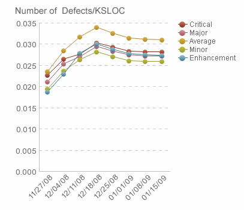

| Defect Density |
 |
|
PurposeDefect Density indicates the code quality attained in the deliverable, based on the number of defects found, fixed, and remaining (not yet fixed). When comparing data over multiple releases, you should be able to draw conclusions about how well you have managed to identify defects. While this Defect Density description focuses on pre-release analysis, Defect Density can be monitored post-release to track how many defects are found by customers (not identified during development). DefinitionDefect Density = Number of total defects found, closed (fixed), and remaining per some unit (typically SLOC). It can be useful to view defects grouped by:
Average Defect Density = Number of total defects found, closed (fixed), and remaining / unit
In this measurement method, Count
AnalysisYou can use a bar, stacked bar, or grouped (stacked) bar chart to show the number of defects in each category, depending on whether you are viewing by component or requirement, by severity, or simply totals. To show trends over time, you can use a series of bars, or a line chart. During development, expect to see the total defect count increase in relation to your testing activities. While you want to see the number of closed defects increasing as well, there may still be a large number of defects remaining (a defect is not closed until the fix has been verified). As you prepare the deliverable for shipment, you typically want to see a low number of remaining defects, and few or no remaining high-severity defects. Set targets for an acceptable level of remaining defects (usually a percentage of the total, with perhaps zero outstanding high-severity defects). A high number of total defects is not necessarily bad, as long as your total fixed defects is acceptable. You can set targets for these numbers based on historical data. For example, this could be your historical defect rate per SLOC (or function point, or whatever you are measuring) on previous similar projects, or within the organization. Defect density should decline over time: 4-6% annually over the long term. Defect density and trending should be used to estimate maintenance effort on a project. As new code is implemented, the defect density should track the existing trends. Once the SLOCs are known, you can estimate the number of defects and multiply by the average repair time to estimate the effort required to implement the maintenance operations. Typical defect densities at customer ship are 0.8 to 1.0 defects for new code, and decline rapidly in the first year to 0.08 to 0.1 defects per 1,000 SLOC for existing code. This decline is also an indication of the usage of the product. Use this measure in conjunction with the Defect Trends metric. The following figure is an example of a defect density report.  Collection and reporting toolsIBM® Rational® Quality Manager® collects defect density data. IBM® Rational® Insight® reports on this metric. |
| Справочные материалы |
|---|
Licensed Materials - Property of IBM |